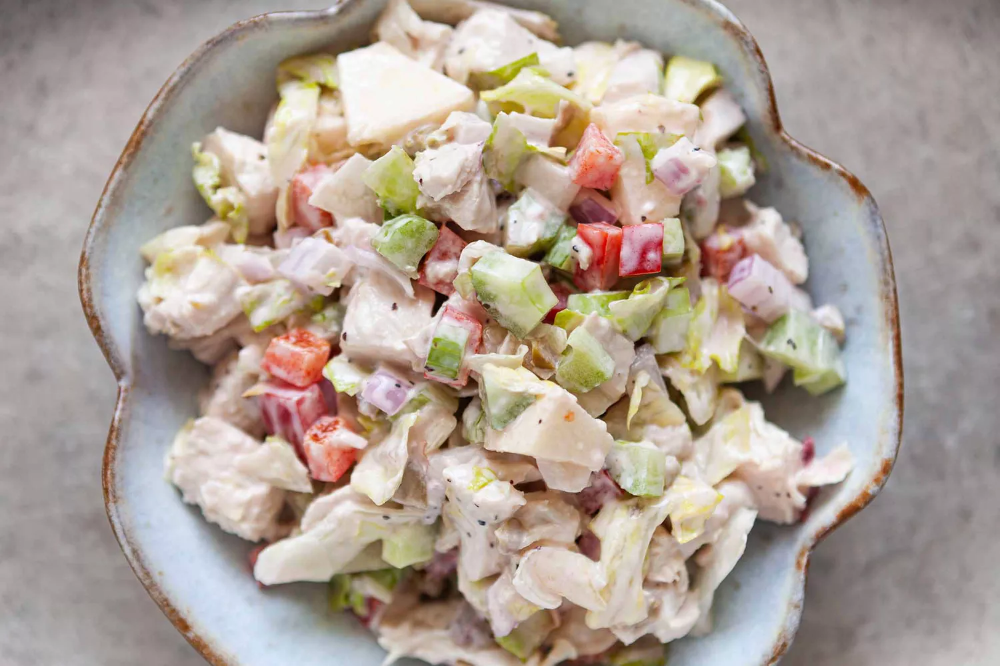

Chicken Salad

Description
Classic chicken salad is a versatile and easy-to-make dish that combines tender, diced or shredded chicken with a mix of fresh vegetables and a creamy dressing. To start, cook chicken breasts until fully done and allow them to cool before dicing. Finely chop celery and red onion, and mix with sweet pickle relish for added crunch and tang. The creamy dressing is a simple blend of mayonnaise, sour cream, Dijon mustard, and lemon juice, seasoned with salt and pepper to taste. This dressing is mixed with the chicken and vegetables to create a flavorful and well-coated salad.
For extra texture and flavor, optional ingredients like halved grapes, chopped pecans or walnuts, and fresh parsley can be added. Once everything is combined, the salad is chilled for at least an hour to let the flavors meld. This chicken salad can be served in various ways: on a bed of lettuce, as a sandwich filling, or with crackers, making it a versatile option for lunch, dinner, or even a light snack. The combination of creamy, crunchy, and savory elements ensures that every bite is satisfying and delicious.
Ingredients
- 3 cups cooked chicken breast, diced or shredded
- 1 cup celery, finely chopped
- 1/2 cup red onion, finely chopped
- 1/2 cup sweet pickle relish
- 1/2 cup mayonnaise
- 1/4 cup sour cream
- 1 tablespoon Dijon mustard
- 1 tablespoon lemon juice
- Salt and pepper to taste
Steps
- Prepare the Chicken:
If not using pre-cooked chicken, cook the chicken breasts by boiling, baking, or grilling until fully cooked. Allow the chicken to cool before dicing or shredding it into bite-sized pieces.
- Prepare the Vegetables and Mix-ins:
Finely chop the celery and red onion.
If using optional ingredients like grapes, pecans, or parsley, prepare these by halving the grapes, chopping the nuts, and finely chopping the parsley.
- Make the Dressing:
In a large mixing bowl, combine the mayonnaise, sour cream, Dijon mustard, lemon juice, salt, and pepper. Mix until smooth and well combined.
-
Assemble the Chicken Salad:
Add the diced or shredded chicken, chopped celery, red onion, and sweet pickle relish to the bowl with the dressing.
If using, add the grapes, nuts, and parsley.
Gently fold all the ingredients together until the chicken and vegetables are evenly coated with the dressing.
- Chill and Serve:
Cover the chicken salad and refrigerate for at least 1 hour to allow the flavors to meld.
Serve the chicken salad chilled on a bed of lettuce, as a sandwich filling, or with crackers.
Enjoy!